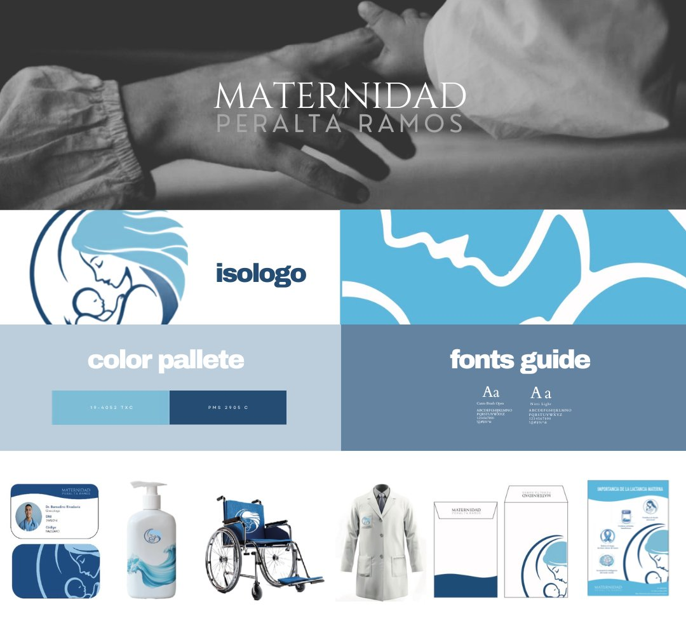

Maternidad
Peralta Ramos
Rebranding 100 years of motherhood — for the next generation of mothers.

The Challenge
Maternidad Peralta Ramos has been part of Buenos Aires for nearly a century. But "almost 100 years" was starting to read less like trusted and more like outdated. The brief was wide open — no existing visual references, no creative direction, no system.
Just one clear ask: make it feel younger. Reposition the institution as the first choice for a new generation of mothers.
The Approach
The starting point was symbolism. Across mythology and culture, the figure of the mother appears in the same recurring symbols — the moon, water, the Egyptian mother. I built the visual system around those references, anchored in a deep blue palette and a modern, minimalist typography.
The goal wasn't to look like a hospital. It was to feel like the first page of a story.
The Outcome
A complete brand manual built across 30 designed assets — logo system, typographic hierarchy, color application, photography direction, and supporting marks for every touchpoint the brand uses.
The logo. The moment the symbol stopped being a placeholder and started being the brand.